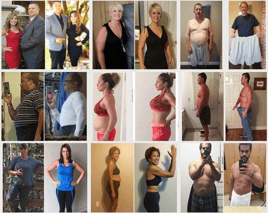
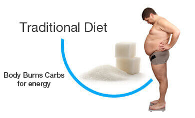
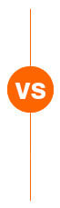
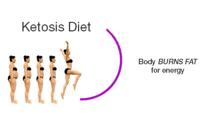
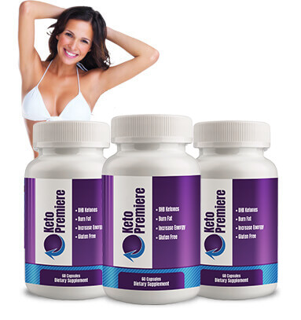

“Find out why Keto Premiere formula is going viral”
Why does it have Scientists, Doctors and Celebrities Buzzing?
The most talked about weight loss product is finally here! A powerful fat burning ketone, BHB has been modified to produce a instant fat burning solution the natural way. Beta-hydroxybutyrate is the first substrate that kicks the metabolic state of ketosis into action. If you take it, BHB is able to start processing in your body resulting in energy and greatly speed up weight loss by putting your body into ketosis. This one BHB Supplement is a revolutionary breakthrough that has the Media in a frenzy!
Keto Premiere with BHB is here to stay because of the unsurmountable success people are having losing up to half a kilogram of fat per day!
Join the Thousands who are already using Keto Premiere!
Join the thousands already losing weight with ketosis! Burn fat for energy instead of carbs and feel the elevated energy that ketosis gives you!
Ketosis Forces your body to Burn Fat for Energy.
  Currently with the massive load of carbohydrates in our foods, our bodies are conditioned to burn carbs for energy instead of fat. Because it is an easier energy source for the body to use up.
1. Fat stores on the body as carbs are burned as an easy energy fuel. Essentially we gain more weight year after year.
2. Carbs are not the body’s ideal source of energy therefore we are usually left feeling tired, stressed and drained at the end of each day.
Ketosis is the state where your body is actually burning fat for energy instead of carbs. Ketosis is extremely hard to obtain on your own and takes weeks to accomplish. Keto Premiere actually helps your body achieve ketosis fast and helps you burn fat for energy instead of carbs!
1. When your body is in ketosis, you are actually burning stored fat for energy and not carbs!
2. Fat IS the body’s ideal source of energy and when you are in ketosis you experience energy and mental clarity like never before and of course very rapid weight loss.
The 30 day ketosis supplement that is Sweeping the Nation!
Puts your body in Ketosis!
Keto Premiere contains Beta-hydroxybutyrate. BHB is the first substrate that kicks the metabolic state of ketosis into action. Revisiting the scenario from before, if you either take supplemental forms or if your body is making beta-hydroxybutyrate, it is able to start processing in your body resulting in energy.
Beta-hydroxybutyrate floats around in your blood, and importantly, can cross different important barriers to be able to be turned into energy at all times. One of the most important areas where this happens is in the brain. The blood-brain barrier (BBB) is usually a very tightly regulated interface, but since BHB is such a rock star and so hydrophilic, your brain knows to let it in so it can bring energy to the party at any time. This is one of the main reasons why increased BHB levels lead to heightened mental acuity.
Get slim, healthy, and confident again with our unique keto supplement. Ideal for both men and women, KETO is a dynamic and powerful ketosis dietary supplement that will assist weight loss, promote abdominal fat burn, and support better digestion and sleep.
Every customer will receive access to our private members area. Within this you will join thousands of people that are on the same journey as you! With access to our 16 week course you'll be able to start your healthy lifestyle change and share thoughts, ideas, and more with like minded individuals.
KETO PREMIERE is a daily supplement that helps you get into fat burning ketosis fast
KETO PREMIERE is a one-of-a-kind ketosis product designed to help you lose weight and feel amazing.
KETO PREMIERE is a supplement that allows the body to begin converting into a state of nutritional ketosis. Featuring a special blend of ingredients, KETO PREMIERE is a safe and simple way to achieve ketosis without the negative side effects of a typical ketogenic diet.
KETO PREMIERE is extremely easy to use and experience fast weight loss results with.
The best way to support your KETO PREMIERE journey is with a diet that consists primarily of fat, with moderate protein and low carbohydrate intake. For best results, aim for a ratio of 70% fat, 25% protein, and 5% carbohydrates.
Before you begin, you are encouraged to take a "before" photo and an inventory of your body measurements, energy level, mental clarity, and overall sense of wellbeing so you can track your results. It's also wise to get plenty of rest and consult your healthcare professional before starting any health program.
Once you are in a state of nutritional ketosis, staying in ketosis is as simple as maintaining a keto-friendly diet, plenty of exercise, and enjoying all the benefits KETO PREMIERE has to offer.
Don't worry! It's OK to spring for dessert or splurge at the buffet at your next family gathering - KETO PREMIERE is always there for you when you need it.